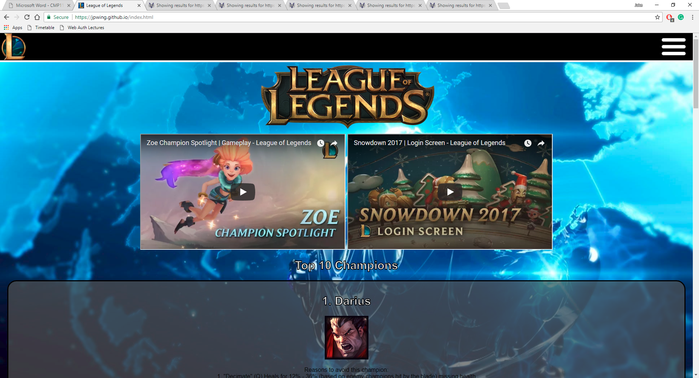
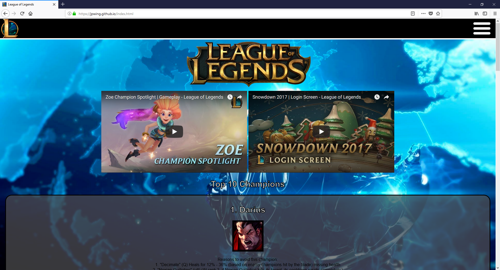
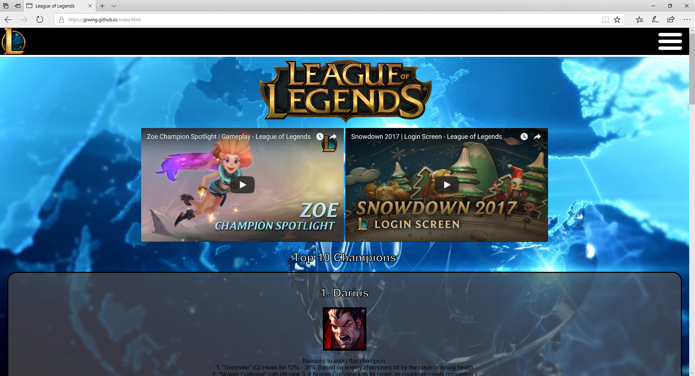

Following web standards is essential to having a well-functioning website, there are multiple ways in which you can achieve this:
The cost of creating a website (for companies that pay for them to be created) can be quite expensive depending on how much time is put into it and then the quality of the final product. You can reduce the cost of web page creation by only having one version of the page. This means that instead of having multiple different web pages for sites that show the same thing just use @media queries to change the way the site looks depending on the device being used. This then in turn reduces the size of the overall website making it quicker to load up and browse.
An important standard to follow if you are going to be working on web creation in the future is the idea of forward compatibility. Due to the current standards of the web we can assume that web browsers in the future are going to have very similar (however more upgraded) features of the ones we have today. This means that by creating a website with this in mind you are going to make it as simple as possible while maintaining the quality of the site.
A major weakness in the web standards that around now is that you must have a very high skill level in order to adhere to them. Without proper training or background knowledge in the subject it will be very difficult to create a website that follows the strict set of rules that websites need to follow in order to keep within the current set of web standards.
There have been a variety of new syntactic features added to HTML for the newest version including 'canvas' which can be used to draw graphics via JS, 'video' which allows a video to be played in a browser without the need of a plugin (like flash), 'audio' in the same scenario as the video tag you are able to play audio without the need of a plugin. Other new elements have been added/removed/modified making the standards more up-to-date.
Following on from the previous version (CSS2.1), CSS3 aims to improve the quality and control a web developer has over the creation of a web page. CSS3 has added new features that CSS2 didn’t have including rounded corners, shadows, gradients, transitions and animations. Not only have they added these new features they have also added new layouts further improving on the last version like multi-media columns and grid layouts.
The website that I have created has been tested on the 3 main web browsers for Windows (Google Chrome, Mozilla Firefox and Microsoft Edge). I have made sure that the current features of the website all work with all of them as this is essential to making a good website. I have not tested the website on Safari (Apple’s web browser) as I do not have access to a Mac, however, I do have access to an iPad which I have used to test (as much as possible). The features that I have included on my website are very limited as I have little knowledge on the subject of web development, I have a theme changer (select your own background image) that saves across the whole website using local storage to store the selected image. The majority of the website is just HTML pages that have been displayed differently depending on the content.
1. Index – Home page giving you a list of the top 10 champions in the game while giving you 2 videos, the most recent video released by the League of Legends YouTube channel and the newest champion spotlight video.
2. About – A page with a few paragraphs on the background of the game and talks about the company that created it (Riot Games).
3. Lanes – This page goes over the essentials you have to learn about playing the game depending on your role. The information was written and taken from - https://www.lol-smurfs.com/blog/lol-roles-explained/
4. Themes – This is the page that you can change the theme of the website on, there is a choice between 4 themes: Victorious, Arcade, Project and Championship.
5. Report_and_video – This is the page that has this report on it and also a video tour of the website explaining everything that I have done to make it as well as showing the interoperability of the site.
Google Chrome – Mozilla Firefox – Microsoft Edge:
  